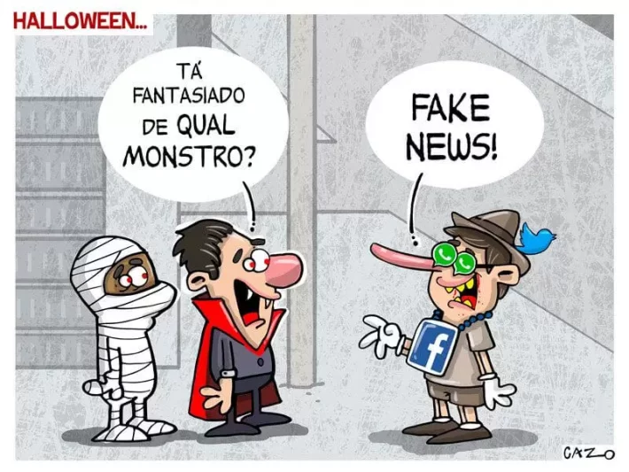

Por que as Fake News são um problema?
Fake News, o monstro mais perigoso da internet!

Atualmente, vivemos não só na era da informação, mas também na era da desinformação.
Mas por que as fake news podem ser prejudiciais? Porque, apesar de parecerem inofensivas, essas notícias falsas conseguem manipular, enganar e causar danos reais à sociedade. São mais do que simples boatos, as fake news são armas de desinformação que geram impactos profundos em diversas esferas da vida social, política, econômica e pessoal.
As fake news podem ser prejudiciais porque distorcem a realidade, comprometem decisões e causam danos sociais, políticos, econômicos e individuais. Ao se espalharem como se fossem verdade, essas informações falsas geram confusão, alimentam conflitos, enfraquecem instituições e afetam a vida de pessoas comuns. O impacto das fake news vai muito além de uma simples mentira compartilhada. Elas colocam em risco a saúde pública, a segurança das pessoas, a estabilidade democrática e a credibilidade da imprensa.
As três áreas mais afetadas pela Fake News são:
- Saúde e segurança: tratamentos falsos, pânico coletivo, golpes com dados pessoais.
- Política e Sociedade: manipulação eleitoral, discursos de ódio, desconfança nas instituições.
- Mídia de Comunicação: crise de credibilidade, desinformação em massa, ataque ao jornalismo.
Quais impactos e consequências as Fake News causam?
As fake news causam impactos políticos e sociais ao distorcer o debate público, manipular opiniões e fomentar conflitos entre grupos. Elas comprometem o funcionamento da democracia e enfraquecem o tecido social. A desinformação nessa esfera não apenas manipula decisões eleitorais, mas também estimula a intolerância, mina a confiança em instituições e destrói reputações. Os efeitos, muitas vezes, são duradouros e difíceis de reparar.
As fake news impactam os meios de comunicação ao desvalorizar o jornalismo, enfraquecer a credibilidade da imprensa e dificultar o acesso à verdade. Elas geram desconfiança generalizada e favorecem o consumo de conteúdo não verificado. Com isso, jornalistas enfrentam crescentes ataques e dificuldades para atuar com liberdade e responsabilidade.
Manipulação política

As fake news são ferramentas poderosas de manipulação política. Elas são usadas para atacar adversários, influenciar resultados eleitorais e promover ideologias com base em mentiras. Durante campanhas, é comum surgirem boatos com falsas acusações, vídeos editados ou teorias conspiratórias. Isso desvirtua o processo democrático e leva o eleitor a decidir com base em desinformação. Mesmo quando as mentiras são desmentidas, o estrago costuma persistir, pois a emoção provocada pela fake news é mais duradoura do que a correção dos fatos.
Desconfiança nas instituições
A disseminação contínua de notícias falsas sobre o funcionamento das instituições públicas enfraquece a confiança popular. Quando o cidadão começa a duvidar do sistema judiciário, do processo eleitoral ou das universidades, o pacto social se rompe. Isso favorece discursos autoritários e dificulta a implementação de políticas públicas.
Polarização e intolerância
Fake news alimentam a polarização ao reforçar estereótipos e provocar o embate entre grupos com visões opostas. Elas criam uma realidade distorcida onde os “inimigos” estão por toda parte e devem ser combatidos. Isso desestimula o diálogo, incentiva o ódio e transforma o debate público em um campo de batalha.
Grupos se isolam em bolhas informativas e passam a rejeitar qualquer informação que contradiga suas crenças. O resultado é uma sociedade mais agressiva, menos empática e com pouca disposição para o consenso.
Danos à reputação
Uma única fake news pode destruir a reputação de uma pessoa, empresa ou instituição. Mesmo quando a verdade é restabelecida, o dano já foi feito e muitas vezes é irreparável. Boatos sobre crimes, traições, falências ou escândalos sexuais se espalham rapidamente e geram julgamentos instantâneos nas redes sociais.
Muitas vítimas têm suas vidas pessoais e profissionais afetadas por algo que nunca aconteceu. O cancelamento público baseado em mentiras é uma das formas mais cruéis de linchamento virtual.

Prejuízos econômicos
Notícias falsas também afetam a economia. Informações mentirosas sobre falências, instabilidades no mercado ou medidas do governo podem provocar queda de ações, fuga de investidores e pânico financeiro. Empresas e marcas atingidas por boatos têm perdas milionárias e sofrem com queda de confiança entre clientes e parceiros. O impacto vai além do setor privado: até políticas públicas podem ser prejudicadas quando a população desacredita de dados econômicos oficiais por causa de narrativas falsas.

Desvalorização do jornalismo
A proliferação de fake news gera uma crise de confiança no jornalismo profissional. O público passa a duvidar até de reportagens bem apuradas, acreditando que “tudo é manipulado”. Isso desvaloriza o trabalho dos comunicadores, reduz a audiência de veículos sérios e fortalece influenciadores não qualificados. Além disso, compromete o papel fiscalizador da imprensa, que passa a ser vista como parte de uma “conspiração”, mesmo quando está apenas cumprindo sua função de informar com base em evidências e fontes confiáveis.
Desafio à verdade
As fake news desafiam a própria noção de verdade ao criar versões alternativas da realidade. Quando mentiras são repetidas à exaustão, elas se tornam plausíveis para parte da população. Isso torna o trabalho dos jornalistas mais difícil, pois não basta informar: é preciso constantemente desmentir o que já foi amplamente compartilhado. A credibilidade da imprensa fica em risco, e o espaço público se enche de ruídos, dificultando o entendimento dos fatos. A busca pela verdade vira uma batalha desigual em meio à avalanche de desinformação.